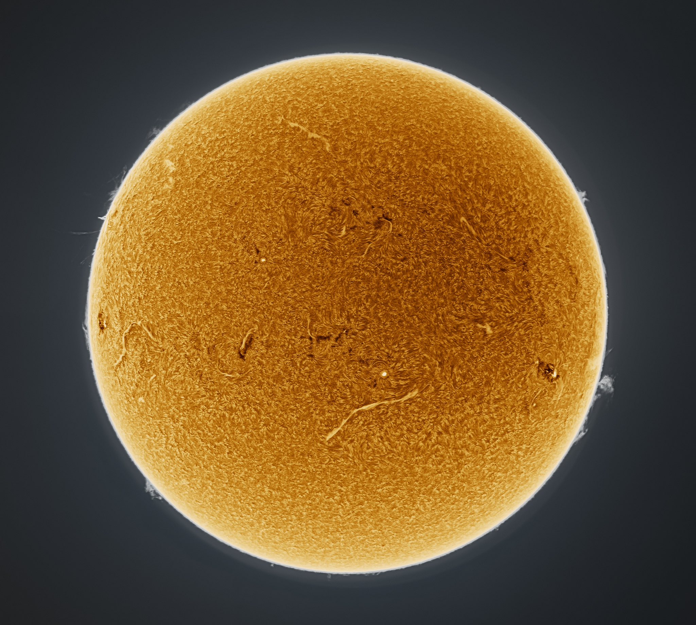
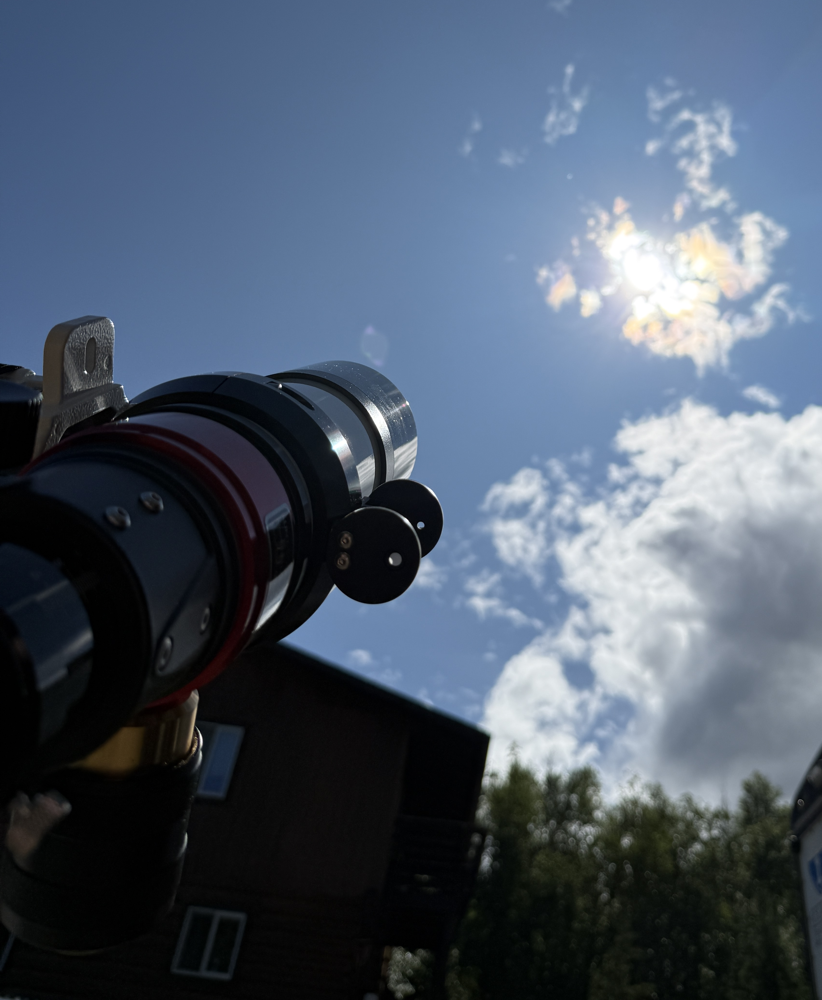
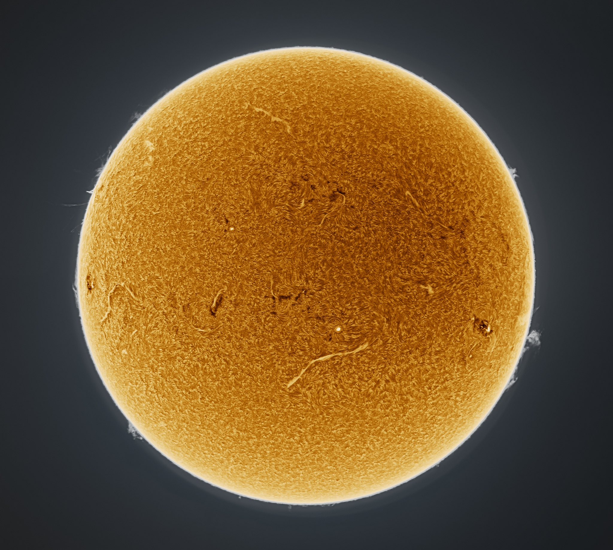
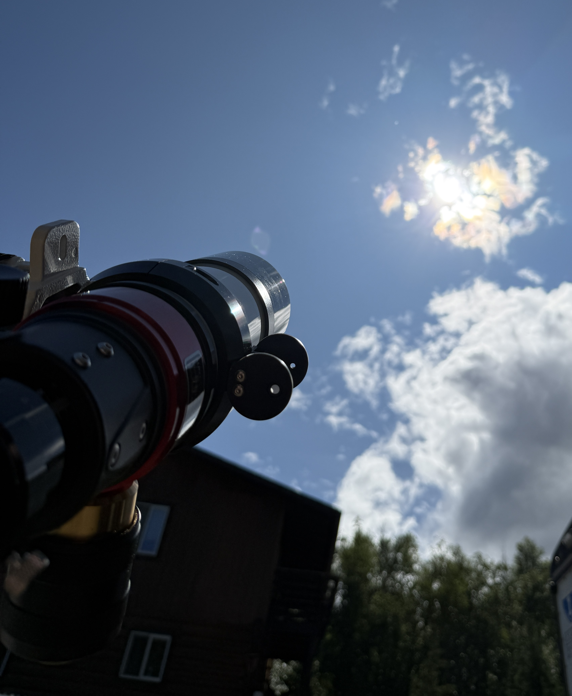

Solar Observing
The Living Surface of the Sun
The Sun is never truly quiet. Prominences, CMEs, and magnetic fields dance across its surface. With an H-alpha telescope, these features come alive in breathtaking detail.
During Alaska’s long summer days, the Sun becomes my main observing companion. Unlike nighttime objects that sit quietly in the sky, the Sun is a restless, ever-changing sphere of plasma. Its surface boils with activity—flares, prominences, and coronal mass ejections that unfold in real time. With my Lunt solar telescope, I can watch these shifting structures for hours, always seeing something new.


 




Solar Activity
Loading...
Solar Safety
Safety is absolutely essential when observing the Sun. Never look directly at the Sun through a telescope, binoculars, or even the naked eye without proper solar filtration—permanent eye damage can occur in an instant. Only use filters specifically designed for solar astronomy, and always place them securely on the front of the telescope, not the eyepiece. Inspect your filter before every session to make sure there are no pinholes, scratches, or loose edges. If you use a dedicated solar telescope like a Lunt, follow the manufacturer’s instructions and never modify the equipment. When in doubt, stop and double- check your setup. Solar observing is incredibly rewarding, but only when done with the right protection.